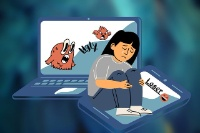

Cada grupo trabajará sobre un tema relacionado con la ciberseguridad y el uso de la tecnología en adolescentes. Aquí tienes 10 propuestas:
Ciberacoso (cyberbullying)

El ciberacoso es el uso de internet, redes sociales o dispositivos móviles para acosar, humillar o amenazar a otras personas. Es un problema grave que afecta especialmente a los adolescentes.
Ideas para investigar:
- ¿Qué es el ciberacoso y cómo se manifiesta?
- Casos reales y consecuencias psicológicas.
- Cómo prevenirlo y qué hacer si eres víctima o testigo.
- Recursos y herramientas para denunciar el ciberacoso.
Privacidad en redes sociales
Compartir información personal en redes sociales puede tener riesgos, como el robo de identidad o el uso indebido de datos.
Ideas para investigar:
- ¿Qué información es peligrosa compartir en redes sociales?
- Cómo configurar la privacidad en plataformas como Instagram, TikTok o Facebook.
- Consejos para proteger tu identidad digital.
- Ejemplos de casos en los que la falta de privacidad ha causado problemas.
Desinformación y fake news
Las fake news son noticias falsas que se difunden rápidamente por internet, causando confusión y daños.
Ideas para investigar:
- ¿Cómo identificar una noticia falsa?
- Herramientas para verificar la información (fact-checking).
- El papel de las redes sociales en la propagación de bulos.
- Ejemplos de fake news que han tenido un gran impacto.
Uso responsable de la inteligencia artificial (IA)
La inteligencia artificial está cada vez más presente en nuestras vidas, pero su uso también plantea desafíos éticos y de privacidad.
Ideas para investigar:
- ¿Qué es la IA y cómo se usa en aplicaciones cotidianas?
- Riesgos de la IA, como el sesgo algorítmico o la pérdida de privacidad.
- Cómo usar la IA de forma responsable y crítica.
- Ejemplos de aplicaciones de IA que han generado polémica.
Adicción a los dispositivos móviles
El uso excesivo de móviles y redes sociales puede generar adicción y afectar la salud mental.
Ideas para investigar:
- Síntomas de la adicción a los dispositivos móviles.
- Impacto en la concentración, el sueño y las relaciones personales.
- Consejos para gestionar el tiempo de pantalla.
- Alternativas saludables para reducir el uso del móvil.
Suplantación de identidad
La suplantación de identidad ocurre cuando alguien usa tus datos personales para hacerse pasar por ti, con fines maliciosos.
Ideas para investigar:
- ¿Qué es el phishing y cómo funciona?
- Cómo proteger tus cuentas y contraseñas.
- Casos reales de suplantación de identidad y sus consecuencias.
- Herramientas para detectar y evitar fraudes en línea.
Tecnología y medio ambiente: el impacto digital
El uso de dispositivos electrónicos y servicios en la nube tiene un impacto en el medio ambiente debido al consumo de energía y los residuos electrónicos.
Ideas para investigar:
- ¿Cuál es la huella ecológica de internet y la tecnología?
- Cómo reducir el impacto ambiental del uso de dispositivos móviles.
- Iniciativas de empresas tecnológicas para ser más sostenibles.
- Consejos para un uso más ecológico de la tecnología.
Contenidos inapropiados
Internet está lleno de contenidos violentos, sexuales o dañinos que pueden afectar a los adolescentes.
Ideas para investigar:
- ¿Cómo acceden los adolescentes a estos contenidos?
- Herramientas de control parental y filtros de contenido.
- Cómo hablar con tus padres o profesores si encuentras algo inapropiado.
- Ejemplos de campañas para promover un internet más seguro.
Seguridad en aplicaciones y juegos online
Muchas aplicaciones y juegos online recopilan datos personales y pueden exponer a los usuarios a riesgos.
Ideas para investigar:
- ¿Qué datos recopilan las apps y juegos?
- Cómo configurar la privacidad en plataformas como Fortnite, WhatsApp o TikTok.
- Riesgos de interactuar con desconocidos en juegos online.
- Consejos para proteger tu información al usar apps y juegos.
Huella digital
La huella digital es el rastro que dejas en internet con todo lo que publicas o compartes.
Ideas para investigar:
- ¿Qué es la huella digital y por qué es importante?
- Cómo puede afectar tu futuro laboral o académico.
- Consejos para gestionar y limpiar tu huella digital.
- Ejemplos de casos en los que la huella digital ha tenido consecuencias negativas.